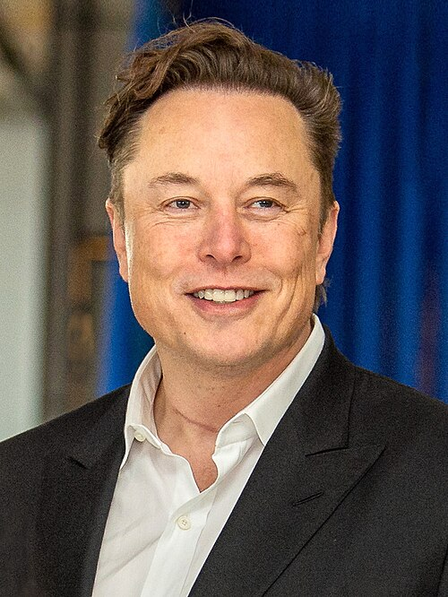

About Elon Musk
Elon Musk is one of the most influential entrepreneurs and innovators of the modern era. Through companies such as Tesla and SpaceX, he has contributed to advancements in electric transportation, reusable rockets, artificial intelligence and space exploration.
His willingness to solve ambitious engineering challenges and invest in long-term innovation continues to inspire entrepreneurs, engineers and students around the world.
Quick Facts
Born
June 28, 1971
Birthplace
Pretoria, South Africa
Nationality
South African, Canadian & American
Occupation
Entrepreneur & Engineer
Major Contributions
🚀 SpaceX
Revolutionized private spaceflight with reusable rockets and ambitious plans for Mars exploration.
🚗 Tesla
Helped accelerate the adoption of electric vehicles and sustainable transportation.
💳 PayPal
Played an important role in the growth of digital payment systems.
🧠 Neuralink
Developing brain-computer interface technologies for future medical applications.
🛣 The Boring Company
Focused on innovative underground transportation and tunneling solutions.
🤖 xAI
Working on artificial intelligence research and development.
Career Timeline
- 1995 — Founded Zip2
- 1999 — Co-founded X.com
- 2002 — Founded SpaceX
- 2004 — Joined Tesla
- 2016 — Founded Neuralink
- 2023 — Founded xAI
Quote
“I think it is possible for ordinary people to choose to be extraordinary.”
Learn More
Read more about Elon Musk and his work by visiting his Wikipedia page.